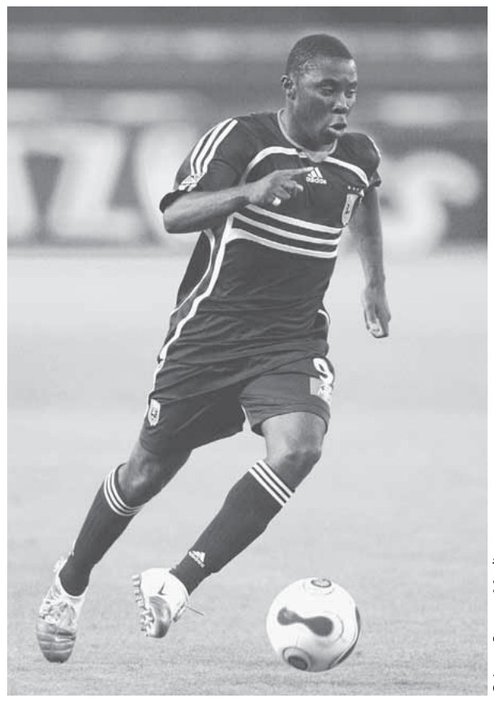
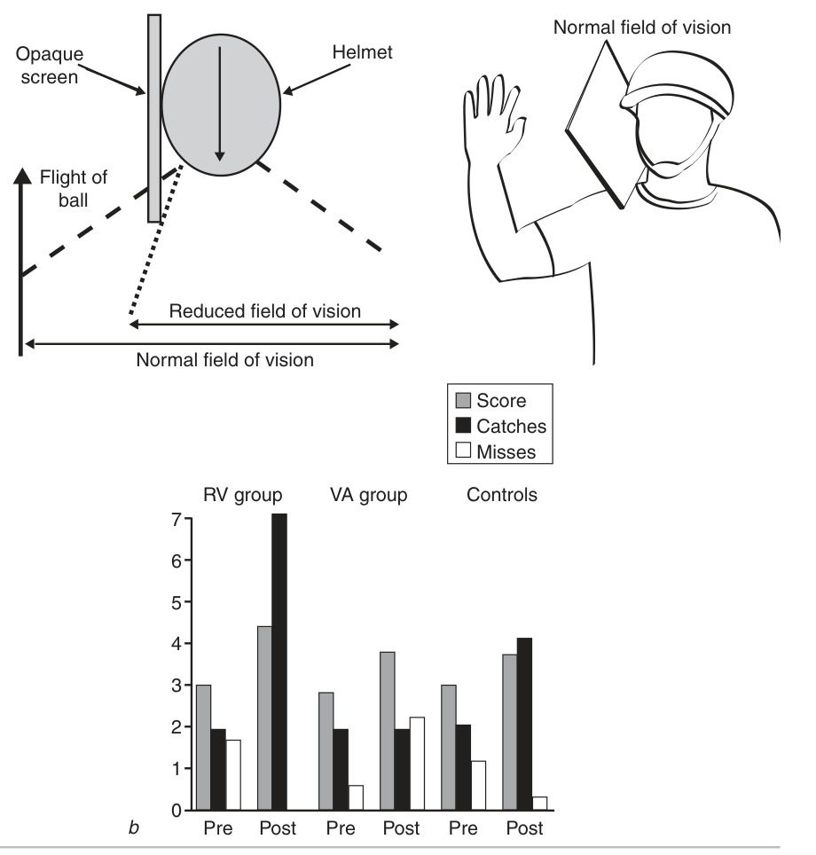

Chương 7 — Tổ chức luyện tập để tối ưu hóa học tập
Tổ chức luyện tập để tối ưu hóa việc học
ĐỀ CƯƠNG CHƯƠNG
Ràng buộc thời gian trong luyện tập
Thao tác ràng buộc nhiệm vụ trong luyện tập
Bẻ cong luật chơi Thay đổi không gian Điều chỉnh thiết bị
Chiến lược cấu trúc hóa luyện tập
Nhiễu ngữ cảnh Tổ chức luyện tập theo phần nhiệm vụ
Tóm tắt
CHƯƠNG 7 CHƯƠNG 7

Như chúng tôi đã lưu ý trong chương trước, một số ràng buộc nhiệm vụ quan trọng nhất mà người thực hành có thể thao tác là các biến số luyện tập. Ví dụ, một đánh giá toàn diện về nghiên cứu luyện tập đã làm nổi bật một loạt biến số có thể ràng buộc quá trình tiếp thu kỹ năng (xem Lee, Chamberlin, & Hodges, 2001). Các biến số này bao gồm lượng luyện tập, loại hình luyện tập (ví dụ, luyện tập có chỉ đạo so với luyện tập dựa trên khám phá), bản chất của phản hồi, số kỹ năng được luyện tập trong một buổi, và cấu trúc của các buổi luyện tập (xem thêm chương 1). Bernstein (1967) gọi quá trình luyện tập là 'lặp lại mà không lặp lại', ý nói ít nhấn mạnh vào việc tái tạo chính xác một mẫu hình vận động qua các lần thử và chú ý nhiều hơn đến việc thích nghi các mẫu hình vận động trong luyện tập để đạt được các mục tiêu kết quả nhất quán. Trong chương này, chúng ta sẽ phân tích quá trình luyện tập và xây dựng lập luận xem luyện tập như một hoạt động tìm kiếm thay vì sự lặp lại hay diễn tập đơn giản một hình thức vận động. Quá trình tìm kiếm trong luyện tập bao gồm việc chỉnh sửa và hoàn thiện các giải pháp vận động từ lần thử này sang lần thử khác mà không dựa vào hiệu suất giống hệt, một dạng 'lặp lại mà không lặp lại' như Bernstein (1967) đã lưu ý. Việc xem luyện tập như một quá trình khám phá là hệ quả của đặc tính tự tổ chức hiện diện ở mọi cấp độ của hệ thống vận động con người và bản chất nổi lên của hành vi thích nghi. Mục tiêu của chúng ta là làm rõ chi tiết của quá trình luyện tập bằng cách xem xét vai trò của người thực hành trong việc thao tác ràng buộc và tổ chức cấu trúc các buổi luyện tập.
Ràng buộc thời gian trong luyện tập
Một đặc điểm quan trọng của tiếp cận dựa trên rào cản/giới hạn liên quan đến cách sự thay đổi trong hành vi vận động có thể được tạo ra như một hàm của học tập và phát triển. Một mục tiêu chính trong nghiên cứu truyền thống về luyện tập là cung cấp các luật chung để mô tả hàm của sự thay đổi và phát triển (xem chương 1). Lý thuyết chi phối về sự thay đổi cùng với học tập là luật lũy thừa của luyện tập, đã được gọi là 'luật phổ biến của học tập' (Newell & Rosenbloom, 1981, tr. 2). Nghiên cứu xem xét tác động tích lũy của luyện tập kéo dài và nhịp độ học tập cho thấy hàm mô tả tốt nhất mối quan hệ này là đơn điệu. Mối quan hệ đơn điệu giữa hai biến (ví dụ, nhịp độ học tập và lượng luyện tập) cho thấy khi một biến tăng (tức là lượng luyện tập), biến kia (tức là nhịp độ học tập) thay đổi cùng chiều. Do đó, luật lũy thừa của luyện tập nêu rằng học diễn ra với nhịp độ nhanh ngay sau khi bắt đầu luyện tập, nhưng nhịp độ học tập giảm dần theo thời gian khi luyện tập tiếp diễn. Tổng hợp lại, những ý tưởng này gợi ý rằng lượng học tập mà người ta đạt được thường là hàm của lượng luyện tập họ thực hiện. Tuy nhiên, về cuối quá trình học, thường có sự đi ngang lại trong mức cải thiện đạt được từ một lượng lần thử luyện tập nhất định.
Tổ chức luyện tập để tối ưu hóa việc học 155
Một số phân tích các dữ liệu được báo cáo và quan sát về lượng thời gian nhạc sĩ dành cho luyện tập có chủ đích đã ủng hộ giả định lợi ích đơn điệu. Ví dụ, như đã đề cập trong chương 1, Ericsson, Krampe và Tesch-Römer (1993) làm nổi bật mối quan hệ đơn điệu giữa số giờ nhạc sĩ luyện tập có chủ đích và mức hiệu suất họ đạt được. Nghiên cứu của họ chỉ ra rằng sự khác biệt giữa nghệ sĩ piano và violin chuyên môn cao với những người không chuyên là do lượng thời gian các nhạc sĩ dành cho luyện tập cường độ cao. Những nhạc sĩ năng lực nhất trong nghiên cứu đã dành hơn 10,000 giờ để luyện tập một mình, trong khi những nhạc sĩ kém thành thạo hơn dành không quá 7,000 giờ luyện tập một mình. Trong luyện tập có chủ đích, người học cũng thường nhận được hướng dẫn từ một người thực hành trong thời gian dài. Khái niệm luyện tập có chủ đích gợi ý rằng vì chuyên môn mang tính đặc thù lĩnh vực, người học nên kỳ vọng rất ít sự chuyển giao năng lực của mình sang các lĩnh vực khác. Ví dụ, những vũ công rất thành thạo với nhiều năm kinh nghiệm có thể kỳ vọng rất ít sự chuyển giao khả năng kỹ thuật của họ sang thể dục dụng cụ hoặc trượt băng nghệ thuật, trừ khi họ tiến hành một giai đoạn luyện tập có chủ đích kéo dài trong những hoạt động đó.
Dù những dữ liệu này hữu ích trong việc giúp chúng ta hiểu mức độ luyện tập mà người học thường cần, chúng không nắm bắt được tính độc đáo trong cuộc đấu tranh cá nhân của mỗi người học, vốn là tiêu điểm hàng đầu của tiếp cận dựa trên rào cản/giới hạn
Tồn tại mối quan hệ đơn điệu giữa số giờ nhạc sĩ luyện tập có chủ đích và mức hiệu suất họ đạt được.
© Jim Whitmer
Lưu ý: Do hạn chế về bản quyền, mục này đã được gỡ bỏ.
góc nhìn. Nghiên cứu về luyện tập có chủ đích bộc lộ điểm yếu quen thuộc là gom chung dữ liệu từ những người học khác nhau, không nhận ra các ràng buộc riêng biệt mà mỗi người cần đáp ứng, như đã mô tả trong các chương 4 và 5.
Những phát hiện này cũng bị thách thức bởi nhiều ví dụ về các vận động viên sớm thành đạt, những người vươn lên đỉnh cao nghề nghiệp từ khi còn trẻ. Ví dụ, năm 2003, cầu thủ bóng rổ LeBron James đã được đề nghị một hợp đồng tài trợ trị giá hàng triệu đô la với một nhà sản xuất trang phục thể thao lớn của Mỹ ở tuổi 18, thỏa thuận lớn thứ hai từng có và gấp hơn hai lần số tiền từng trả cho huyền thoại Michael Jordan. Trong bóng đá, Freddy Kofi Adu 11 tuổi là đối tượng của một lời đề nghị chuyển nhượng trị giá triệu đô la từ đội bóng châu Âu Inter Milan. Cậu được chọn vào đội tuyển dưới 17 tuổi của Hoa Kỳ ở tuổi 13 và sau đó được các câu lạc bộ Giải Ngoại hạng Anh tiếp cận để ký các hợp đồng hàng triệu đô la vào năm 2003, rồi thử sức tại Manchester United, một trong những câu lạc bộ lớn nhất thế giới, năm 2006. Vô số ví dụ về những thần đồng như vậy tồn tại trong các lĩnh vực hiệu suất khác như âm nhạc, nghệ thuật và múa (van Lieshout & Heymans, 2000). Tính sớm thành thục trong năng lực của nhiều người thực hiện thách thức ý tưởng rằng thời gian dành cho luyện tập có chủ đích là ràng buộc chính đối với tiếp thu kỹ năng và phát triển tài năng.
Một số nhà lý thuyết đã gợi ý rằng cấu trúc vi mô của các hoạt động (tức là các thói quen và bài tập cụ thể) được tiến hành trong luyện tập có chủ đích là quan trọng nhất (Starkes, 2000), nhưng các nghiên cứu thực nghiệm hiện có trong lĩnh vực này có một số hạn chế (xem Davids & Baker, in press; Davids, 2000). Ví dụ, các hoạt động luyện tập có chủ đích thường được suy ra từ các ước tính hồi tưởng qua nhiều năm, và điều này dễ bị thiên lệch trong ghi chép từ phía người tham gia. Thêm vào đó, sự thiếu các nhóm đối chứng trong thiết kế nghiên cứu nhằm trực tiếp kiểm tra các dự đoán của lý thuyết là điều dễ nhận thấy. Điểm được nêu trước đó về khó khăn trong việc ghi chép chính xác cấu trúc vi mô của luyện tập thay vì lượng hóa bao nhiêu thời gian luyện tập đã được tích lũy là quan trọng, bởi vì, ở
Cầu thủ bóng đá Freddy Adu. Tính sớm thành thục trong năng lực của nhiều người thực hiện thách thức ý tưởng rằng thời gian dành cho luyện tập có chủ đích là ràng buộc chính đối với tiếp thu kỹ năng và phát triển tài năng.
© Icon Sports Media

Tổ chức luyện tập để tối ưu hóa việc học 157
tình huống cực đoan, người học có thể bị quá tải do luyện tập kỹ năng trong một phạm vi hẹp của ràng buộc nhiệm vụ, đặc biệt nếu thói quen xấu vô tình hình thành hoặc nếu tập luyện quá sức hay chấn thương do căng thẳng lặp đi lặp lại xảy ra. Chỉ biết số giờ mà người học cần dành cho luyện tập có chủ đích là chưa đủ. Những người thực hành vận động cần quản lý những thay đổi trong học, và một phương pháp then chốt là thao tác các ràng buộc đối với người học trong lúc họ cố khám phá giải pháp vận động của riêng mình.
Thao tác ràng buộc nhiệm vụ trong luyện tập
Trong chương 4, chúng ta đã thừa nhận rằng duy trì và chuyển giao là các chỉ số của học vận động, và nhiều chiến lược chúng ta sẽ thảo luận trong chương này nhấn mạnh các khái niệm này. Người thực hành nên lưu ý rằng các kỹ thuật chúng tôi đề xuất có thể dẫn đến nhịp độ tiếp thu kỹ năng chậm hơn so với các chiến lược giảng dạy truyền thống. Tuy nhiên, cũng như một thứ rượu ngon, quá trình tiếp thu kỹ năng cần được cho thời gian để chín muồi tự nhiên nhằm có kết quả tốt hơn về lâu dài. Không phải người học nào cũng có năng khiếu như những ngôi sao trẻ phi thường đã nhắc đến ở trên.
Bẻ cong luật chơi
Mỗi môn thể thao có luật chơi riêng được thiết kế để ràng buộc hành vi của người tham gia ở các mức độ khác nhau và tạo ra bối cảnh cạnh tranh công bằng. Ví dụ, để tránh giành lợi thế không công bằng so với đối thủ, người ném lao không được bước qua vạch ném. Trong các hoạt động vận động nói chung hơn, luật chơi có thể cùng tồn tại với các quy ước văn hóa – xã hội, chẳng hạn như tuân theo tín hiệu giao thông khi lái xe. Bất kể hoạt động nào, người học cố vận động trong khuôn khổ ràng buộc của luật chơi, nếu không sẽ có nguy cơ không đạt được mục tiêu nhiệm vụ. Trong nhiều môn thể thao và hoạt động, người thực hành thường bỏ qua việc dạy luật chơi cho đến sau khi người học đã luyện tập một số kỹ thuật cơ bản riêng lẻ (xem chương 5). Hệ quả là người học có thể ít có cơ hội tìm kiếm và khám phá các chuyển động trong những tình huống giống như trò chơi.
Khả năng tuân thủ luật chơi và tạo ra các mẫu hình vận động tương ứng của người học có thể được khai thác như một chiến lược luyện tập mạnh mẽ. Thay vì cố nhận và diễn giải các hướng dẫn bằng lời nói cụ thể về cách đạt được mục tiêu nhiệm vụ, người học cần tự mình tham gia và giải quyết những vấn đề thực tế. Người thực hành có thể dùng những thay đổi nhỏ về luật chơi để ảnh hưởng đến người chơi, khiến họ điều chỉnh động lực học nội tại hiện có nhằm khớp với thông tin hành vi được đưa vào theo cách đặc thù của trò chơi (Corbetta & Vereijken, 1999). Nhiệm vụ của người thực hành là thao tác ràng buộc bằng cách đưa ra những thay đổi luật chơi thực tế cho phép người học tìm kiếm và chuyển hóa các giải pháp vận động phù hợp thành hiệu suất thực tế (Handford, Davids, Bennett, & Button, 1997). Tiếp theo chúng ta sẽ xem xét hai ví dụ từ thể thao đồng đội và cá nhân để giúp hiểu cách thao tác ràng buộc dạng này có thể hoạt động như thế nào.
Thể thao đồng đội: Bóng đá Một kỹ thuật phổ biến trong giáo dục thể chất và huấn luyện là thay đổi luật của các trò chơi luyện tập để khuyến khích tiếp thu các kỹ năng cụ thể (Capel, 2000; Rink, 2001). Điều này đôi khi được gọi là điều kiện hóa một trò chơi luyện tập. Ví dụ, một huấn luyện viên bóng đá có thể giúp người học cải thiện khả năng kiểm soát bóng và kỹ năng chuyền bóng trong một trò chơi luyện tập được biến đổi (có điều kiện), nơi mỗi cầu thủ chỉ được phép chạm bóng với số lần hạn chế. Luật hai lần chạm bóng yêu cầu cầu thủ đang giữ bóng phải chuyền hoặc bắn chỉ sau hai lần chạm bóng; nếu không, cầu thủ phạm lỗi và mất bóng về phía đối phương.
Một thay đổi luật đơn giản như vậy ảnh hưởng thế nào đến tiếp thu kỹ năng? Thứ nhất, luật hai lần chạm đòi hỏi một cú chạm bóng đầu tốt để kiểm soát và đặt bóng cho cú chạm thứ hai quan trọng. Để có cú chạm đầu tốt, người nhận bóng phải học cách nhận biết thông tin quan trọng khi bóng đang đến nhằm giữ tư thế cơ thể phù hợp (Button, Smith, & Pepping, 2005). Hình ảnh quang học của quả bóng đang tiến đến trên võng mạc sẽ giúp xác định cách dẫn dắt một hành động chặn bắt bằng chân đá (xem chương 3). Người thực hành không dạy tường minh cho người học chú ý đến những nguồn thông tin đó hay kiểm soát bóng tốt hơn; thay vào đó, người học được khuyến khích tự khám phá các giải pháp này. Bằng cách tuân theo những luật này, người học sẽ tìm kiếm giải pháp vận động giúp họ nhanh chóng kiểm soát và chuyền bóng cho đồng đội. Qua luyện tập nhiều dưới những ràng buộc này, hệ thống vận động sẽ tiến hóa để thu nhận các bất biến tri giác then chốt từ quả bóng và chuyển động của đồng đội. Dần dần, các mẫu hình phối hợp đặc thù cho nhiệm vụ sẽ nổi lên, các liên kết này trở nên bền chặt hơn và hành động trông trôi chảy, tự động hơn (Anderson & Sidaway, 1994; Broderick & Newell, 1999).
Sau khi người học đã tiếp thu một mẫu hình phối hợp cơ bản, người thực hành có thể đưa vào một ràng buộc nhiệm vụ bẻ cong luật chơi gần với các tình huống trò đấu, nơi sự hiện diện của đối thủ áp đặt giới hạn thời gian cho hành động. Sau đây là một số luật nhân tạo khác được thiết kế để ổn định một số mẫu hình phối hợp nhất định trong luyện tập bóng đá. Hãy xem xét bản chất của những kỹ năng mà huấn luyện viên có thể muốn tăng cường bằng cách đưa các luật nhân tạo này vào luyện tập:
Áp đặt hạn chế bắn bóng từ những khu vực của sân rất gần khung thành. Mỗi thành viên trong đội phải chạm bóng trước khi được bắn. Chỉ bàn thắng được ghi từ những đường chuyền cao (hoặc tạt bóng) mới được tính. Bàn thắng từ cú đánh đầu hoặc cú sút volley được tính gấp đôi.
• • •
Tổ chức luyện tập để tối ưu hóa việc học 159
Thể thao cá nhân: Bóng tường Một ví dụ từ môn thể thao cá nhân hữu ích để phát triển ý tưởng thao tác ràng buộc đối với người học bằng cách áp đặt các luật hoặc điều kiện nhất định. Huấn luyện viên bóng tường khuyến khích cầu thủ trở lại vị trí chữ T trên sân giữa các cú đánh, vì đây là vị trí trung tâm giúp dễ dàng lấy bóng từ mọi khu vực của sân. Tiếc thay cho người chơi, việc di chuyển về vị trí chữ T sau mỗi cú đánh lại không quen thuộc và thường bị quên trong lúc căng thẳng của một loạt bóng. Một thay đổi luật có thể giúp cầu thủ phát triển kỹ năng định vị này như thế nào? Một cách tiếp cận có thể là hướng dẫn mỗi cầu thủ bước vào một vùng mục tiêu nhỏ quanh vị trí chữ T giữa các điểm, nếu không sẽ mất điểm đang chơi. Luật này nên khuyến khích người chơi nhận ra vị trí trên sân này là một điểm then chốt về không gian xung quanh đó có thể thực hiện các cú đánh thông thường như cú trái tay hay cú bóng ngắn. Bẻ cong luật chơi theo cách này có thể ràng buộc hành động trong khi việc tuân theo hướng dẫn bằng lời nói của huấn luyện viên thì chưa chắc đã được.
Trong nghiên cứu về động lực phối hợp, Carson, Goodman, Kelso và Elliott (1995) gọi hiện tượng này là sự neo nội tại. Bằng cách thiết lập neo nội tại, người thực hiện phát triển các liên kết vận động bền chặt hơn với các nguồn thông tin then chốt của môi trường. Như một bài tập huấn luyện, dạng luyện tập này cũng có khả năng cải thiện thể lực tim mạch, vì mỗi cầu thủ bị buộc phải di chuyển giữa các cú đánh để tập trung vào vị trí tối ưu trên sân. Bằng cách áp dụng dạng ràng buộc nhiệm vụ này tương đối sớm trong quá trình học, các chuỗi hành động tĩnh, có thể đoán trước có thể được tạo nên tính năng động hơn. Một lợi ích bổ sung của việc dùng ràng buộc nhiệm vụ làm điều kiện trong luyện tập là người học được khuyến khích từ giai đoạn sớm chịu trách nhiệm về hành động của mình và luyện tập các hoạt động ra quyết định có thể liên quan trong thi đấu.
Thay đổi không gian
Vì mọi hoạt động thể chất đều diễn ra trong những môi trường bị giới hạn bởi ranh giới ở một mức độ nào đó, khả năng tăng hoặc giảm diện tích hiệu suất trong luyện tập là rất phổ biến. Hãy xem xét lợi ích mà người chơi khúc côn cầu trên cỏ có thể đạt được khi luyện tập dưới các ràng buộc nhiệm vụ mà ở đó một cầu thủ phải rê bóng vượt qua đối thủ trong một không gian hạn chế. Thứ nhất, các ràng buộc nhiệm vụ hướng người rê bóng tới những mẫu hình vận động giúp giữ bóng sát người, chẳng hạn duy trì kiểm soát bóng và gậy, rê bóng với nhịp độ, và đổi hướng. Thứ hai, người phòng thủ học cách định vị để ngăn đối thủ rê bóng vượt qua mình và cách canh thời điểm chặn bóng bằng gậy. Khi người học cải thiện kỹ năng rê bóng, người thực hành có thể dần thay đổi ràng buộc nhiệm vụ bằng cách thu hẹp thêm khu vực chơi hoặc thêm cầu thủ để khuyến khích các hành động chuyền bóng và kiểm soát bóng.
Việc thao tác các ràng buộc nhiệm vụ bằng cách thay đổi đặc điểm không gian của khu vực chơi trong các môn thể thao dùng vợt, chẳng hạn như quần vợt rút gọn và cầu lông, cũng có thể mang lại lợi ích. Trong giai đoạn học tập ban đầu, khi người chơi mới đang thiết lập các mẫu hình phối hợp mới, việc chơi trong một sân hoặc khu vực rộng hơn có thể có lợi vì ít cú đánh hơn sẽ rời khỏi sân và bị coi là lỗi. Khi người chơi đã thiết lập được các mẫu hình phối hợp cơ bản, chẳng hạn như cú thuận tay, kích thước sân có thể được thu nhỏ lại để buộc người chơi phải tinh chỉnh chuyển động của cánh tay cầm vợt nhằm đáp ứng yêu cầu độ chính xác cao hơn. Ví dụ, trong quần vợt, việc dời vạch phát bóng lại gần lưới hơn ở sân của đối thủ sẽ đòi hỏi mặt vợt phải khép lại khi chạm bóng để tạo ra quỹ đạo bóng cong vòm qua lưới. Ngoài ra, việc hạ thấp hoặc nâng cao lưới trong luyện tập khuyến khích người chơi quần vợt và cầu lông khám phá cách thức và thời điểm mà các quỹ đạo cú đánh khác nhau có thể hữu ích trước đối thủ.
Khái niệm chính
Trong nhiều môi trường thực hiện, người chơi phải học cách khai thác không gian hoặc thể hiện kỹ năng trong một khu vực hạn chế. Dưới các ràng buộc nhiệm vụ không gian bị thu hẹp, người học cải thiện khả năng chuyển giao kỹ năng vì họ phải điều chỉnh các mẫu hình phối hợp của mình cho phù hợp với
Trong cầu lông, việc thao tác các ràng buộc nhiệm vụ bằng cách thay đổi đặc điểm không gian của sân đôi khi có thể mang lại lợi ích cho người học.
© Jeon Heon-Kyun/epa/Corbis
Lưu ý: Do hạn chế về bản quyền, mục này đã được gỡ bỏ.
Tổ chức luyện tập để tối ưu hóa việc học 161
bối cảnh thực hiện mới. Một lần nữa, rõ ràng là lợi ích quan trọng nhất cho người học là họ phải tự tạo ra giải pháp phù hợp của riêng mình cho các ràng buộc nhiệm vụ mới. Tình huống này đại diện cho một cơ hội học tập quý giá, trong đó người học phải đánh giá lại các năng lực vận động hiện có của mình trước các yêu cầu thực tế của môi trường. Một lợi ích bổ sung của việc thay đổi kích thước khu vực luyện tập là người học luôn giữ được sự hứng thú và động lực vì các ràng buộc nhiệm vụ có thể được điều chỉnh liên tục cho phù hợp với trình độ chuyên môn của họ.
Điều chỉnh thiết bị
Ảnh hưởng của khoa học thể thao và những tiến bộ công nghệ trong 50 năm qua đã dẫn đến sự quan tâm ngày càng tăng đối với hiệu quả của thiết bị thể thao. Những động lực tài chính đáng kể liên quan đến việc nâng cao hiệu suất trong thể thao hiện đại đã góp phần vào nhiều thay đổi trong thiết kế thiết bị, chẳng hạn như giày trượt tốc độ (de Koning, de Groot, & van Ingen Schenau, 1992) và gậy golf (Iwatsubo, Kawamura, Miyamoto, & Yamaguchi, 2000). Trong phần này, chúng ta sẽ xem xét cách người thực hành có thể sử dụng thiết bị và các công cụ hỗ trợ nhân tạo trong luyện tập để ràng buộc các mẫu hình vận động của người học và thúc đẩy tiếp thu kỹ năng. Thiết bị được điều chỉnh có thể tái cấu trúc môi trường luyện tập và giúp người học đối phó với các ràng buộc nhiệm vụ ít nghiêm ngặt hơn. Người thực hành có thể dùng các công cụ hỗ trợ luyện tập để tạm thời ràng buộc hệ thống người thực hiện–môi trường, khuyến khích sự tập trung phù hợp vào một số biến tri giác nhất định hoặc sự nổi lên của các ghép nối thông tin–vận động then chốt. Những người thực hành thành công nhận ra rằng việc sử dụng thiết bị được điều chỉnh một cách thỉnh thoảng phải được tích hợp cẩn thận vào chương trình huấn luyện của vận động viên để sự chuyển giao vận động sang các lần thực hiện sau là tối ưu. Người học không được trở nên phụ thuộc vào việc sử dụng các thiết bị nhân tạo.
Luyện tập khi bị bịt mắt Mặc dù việc dùng bịt mắt hoặc kính che thị giác trong luyện tập bóng chuyền, bóng đá và bóng rổ có vẻ bất thường, nhưng một số nghiên cứu gần đây đã ủng hộ ý tưởng che giấu các nguồn thông tin khác nhau trong quá trình học để hướng người chơi đến các nguồn thông tin tri giác thay thế (xem NGHIÊN CỨU TIÊU ĐIỂM). Các thiết bị che khuất như bịt mắt, tạp dề nhô ra quanh eo và dụng cụ hỗ trợ rê bóng đeo dưới mắt để che tầm nhìn của các chi đã được dùng trong bóng chuyền để hướng sự tìm kiếm thông tin âm thanh của người chắn bóng từ cú chạm bóng của người chuyền, trong bóng rổ để ngăn người chơi nhìn vào tay mình khi đang dẫn bóng, trong bóng đá để hướng người chơi ngẩng đầu lên và tìm kiếm thông tin thị giác trong môi trường khi rê bóng, và trong golf để tập trung sự chú ý của người chơi vào cảm giác bản thể của cú vung gậy. Ở chiều ngược lại, những người thực hành vận động khác, chẳng hạn như giáo viên dạy múa, lại ủng hộ việc dùng gương hoặc phản hồi video trực tiếp để tăng cường thị giác. Điểm mấu chốt là người thực hành có thể loại bỏ hoặc bổ sung thông tin để giúp người học phát triển các ghép nối thông tin–vận động phù hợp.
Nghiên cứu tiêu điểm
CÁC RÀNG BUỘC THỜI GIAN VÀ THÔNG TIN ĐỐI VỚI THỰC HIỆN BẮT BÓNG BẰNG MỘT TAY
Trong thí nghiệm bắt bóng bằng một tay của Bennett, Button, Kingsbury và Davids (1999), ba nhóm trẻ được chọn bằng một bài kiểm tra sơ bộ về khả năng bắt bóng. Chỉ những người tham gia bắt được chưa tới 10% số lần thử mới được nghiên cứu. Một nhóm trẻ luyện tập nhiệm vụ với tầm nhìn bị hạn chế (nhóm RV), đội mũ bảo hộ có gắn tấm chắn mờ (xem hình 7.1a). Chiếc mũ được thiết kế để loại bỏ thông tin thị giác về chi đang dùng để bắt bóng. Các nhà nghiên cứu dự đoán rằng khi thiếu

Hình 7.1: Việc thao tác quyền tiếp cận thông tin của cánh tay đang bắt bóng có thể mang lại lợi ích cho tiếp thu kỹ năng bắt bóng bằng cách hướng sự tìm kiếm của người học tới các nguồn thông tin liên quan để bắt bóng.
Được in lại với sự cho phép của Research Quarterly for Exercise and Sport, Tập 70, 220-232, Bản quyền 1999 bởi American Alliance for Health, Physical Education, Recreation and Dance, 1900 Association Drive, Reston, VA 20191.
Trước Sau Trước Sau Trước Sau
Nhóm RV Nhóm VA Nhóm đối chứng 7
Điểm Số lần bắt Số lần trượt
Trường thị giác bình thường
Trường thị giác bình thường
Trường thị giác bị thu hẹp
Quỹ đạo của
bóng
Mũ bảo hộ Tấm chắn
mờ
Tổ chức luyện tập để tối ưu hóa việc học 163
thông tin thị giác, trẻ sẽ bị buộc phải tìm kiếm các nguồn thông tin thay thế, chẳng hạn như thông tin bản thể từ cánh tay đang bắt bóng. Nhóm RV được chuyển sang điều kiện thị giác bình thường sau 120 lần luyện tập. Nhóm thứ hai có thị giác sẵn có (nhóm VA) trong các lần luyện tập nhưng sau đó được chuyển sang điều kiện RV cho 20 lần thử chuyển giao. Cuối cùng, một nhóm đối chứng được huấn luyện trong cùng số lần thử với thị giác bình thường suốt quá trình.
Như thể hiện trong hình 7.1b, mỗi nhóm đều cải thiện số lần bắt được từ bài kiểm tra trước đến sau. Điều đáng chú ý đặc biệt là sự cải thiện lớn hơn đáng kể của nhóm RV so với nhóm VA. Trong các bài kiểm tra chuyển giao, nhóm RV không cho thấy tác động bất lợi nào khi bắt bóng trong điều kiện thị giác bình thường. Tuy nhiên, nhóm VA thực hiện kém khi tầm nhìn của cánh tay đang bắt bóng bị che khuất. Độ nhạy của nhóm VA đối với việc loại bỏ thông tin thị giác cho thấy những người bắt bóng trong nhóm này đã phụ thuộc nhiều vào thị giác và kém thích ứng hơn đôi khi thông tin này bị hạn chế. Một gợi ý khác là nhóm RV đã được lợi từ việc được hướng tới các nguồn thông tin do tầm nhìn thấy bóng ở giai đoạn đầu của quỹ đạo, cảm giác bản thể từ cánh tay đang bắt bóng và thông tin âm thanh từ máy phát bóng cung cấp.
ỨNG DỤNG
Tóm lại, các dữ liệu ủng hộ việc sử dụng công cụ hỗ trợ như một chiến lược giảng dạy để thao tác các ràng buộc thông tin và hướng người mới bắt đầu đến các nguồn thông tin phù hợp. Việc những người học có kinh nghiệm hơn có cho thấy lợi ích tương tự trong hiệu suất dài hạn khi đáp ứng với những thao tác như vậy trong luyện tập hay không là một câu hỏi thú vị cho các công trình tương lai. Những loại hoạt động vận động nào khác mà người học có thể được lợi từ luyện tập với tầm nhìn bị hạn chế? Trong bối cảnh phục hồi chức năng sau chấn thương, hãy nêu một ví dụ tương tự về cách người thực hành có thể hướng bệnh nhân tới các nguồn thông tin then chốt (ví dụ: âm thanh, xúc giác hoặc thị giác) hỗ trợ các chuyển động như kiểm soát tư thế, thăng bằng hoặc di chuyển tới một mục tiêu.
Futebol de Salão Các ràng buộc nhiệm vụ thường được thao tác theo cách này hay cách khác trong các môn thể thao dùng bóng, nhưng lợi ích gì có thể đạt được từ việc thay đổi đặc điểm của quả bóng? Người thực hành có thể dùng thiết bị được điều chỉnh để hướng người học tới các dạng thông tin giác quan thay thế nhằm điều chỉnh hành vi vận động. Ví dụ, thiết bị nặng hơn bình thường có thể tạo tải cho hệ thống giác quan xúc giác với các mô-men quán tính khác nhau, hướng sự chú ý của người học tới nguồn thông tin quan trọng này (Beak, Davids, & Bennett, 2000). Trong thập kỷ qua, futebol de salão (FDS), một loại bóng đá Nam Mỹ (bóng soccer), đã được du nhập vào Anh. Quả bóng FDS nhỏ hơn và nặng hơn quả bóng cỡ 5 chuẩn, loại bóng có hệ số phục hồi giữa 45% và 48% với áp suất được khuyến nghị là 11,4 pound trên mỗi inch vuông (78,6 kilopascal). Đối với FDS, độ đàn hồi phục hồi được khuyến nghị nằm trong khoảng 10% đến 15% và áp suất được duy trì ở 8,5 pound trên mỗi inch vuông (58,6 kilopascal). Mật độ của quả bóng FDS được thao tác bằng cách bơm vào ruột bóng một loại xốp làm giảm đặc tính nảy của bóng, từ đó đảm bảo bóng được chơi trên mặt đất nhiều hơn. Điều này khuyến khích người học dùng lòng bàn chân để kéo bóng tránh khỏi các hậu vệ ở khoảng cách rất gần. Các công cụ luyện tập tương tự hiện có sẵn rộng rãi cho nhiều môn thể thao chẳng hạn như bóng bầu dục và bóng rổ. Cũng như với FDS, nhà sản xuất các sản phẩm này tuyên bố những quả bóng này cải thiện khả năng kiểm soát bóng trong luyện tập (ví dụ, xem www.icfds.com).
Tuy nhiên, ảnh hưởng của thiết kế bóng đối với khả năng kiểm soát bóng vẫn chưa được biết rõ vì rất ít nghiên cứu khoa học xem xét bóng được thiết kế lại như một ràng buộc đối với sự nổi lên của các kỹ năng bóng. Button, Bennett, Davids và Stephenson (1999) đã kiểm tra hiệu ứng luyện tập khi dùng một quả bóng nhỏ với hệ số phục hồi thấp hơn đối với việc học hai kỹ năng đặc thù của bóng đá: rê bóng và tung bóng. Trong thí nghiệm này, một nhóm người mới bắt đầu luyện tập với bóng FDS được so sánh với một nhóm luyện tập với bóng đá cỡ chuẩn. Trong bài kiểm tra tung bóng được tiến hành sau 10 tiết tiếp thu, nhóm thử nghiệm cho thấy sự cải thiện lớn hơn đáng kể về kiểm soát bóng so với nhóm đối chứng (cải thiện 25% so với 9% về điểm tung bóng từ bài kiểm tra trước đến sau).
Chapman, Bennett và Davids (2001) đã mở rộng các phát hiện của Button, Bennett, Davids và Stephenson (1999) bằng cách thao tác kích thước bóng và hệ số phục hồi như một hàm của trình độ kỹ năng của người học. Trái ngược với Button và các cộng sự, những người nghiên cứu trẻ em ở giai đoạn kiểm soát của học vận động, Chapman và các cộng sự nghiên cứu khả năng kiểm soát bóng của trẻ em ở giai đoạn phối hợp trong mô hình tiếp thu kỹ năng của Newell (1985). Định nghĩa chính xác hơn về người học trong nghiên cứu của Button và cộng sự có thể là người mới bắt đầu, trong khi trẻ em được Chapman và cộng sự nghiên cứu được mô tả thích hợp là những người mới học hoàn toàn. Dùng cùng các bài kiểm tra như Button và các cộng sự, Chapman và các cộng sự không phát hiện thấy tác động nào đến tiếp thu kỹ năng khi các đặc điểm của bóng được thao tác. Kết quả từ cả hai nghiên cứu cho thấy việc thao tác thiết kế thiết bị tương tác như thế nào với trình độ kỹ năng của người học. Trong trường hợp của FDS, cần có thêm nghiên cứu để kiểm tra thiết kế thiết bị ảnh hưởng như thế nào đến tiếp thu kỹ năng của trẻ em ở cả giai đoạn phối hợp và giai đoạn kiểm soát. Các phân tích tinh chỉnh hơn cũng nên bao gồm nghiên cứu về những thay đổi trong phối hợp cùng với việc học.
Chiến lược cấu trúc hóa luyện tập
Đã có một lượng nghiên cứu đáng kể được tiến hành về các biến ảnh hưởng đến tổ chức luyện tập (Lee, Chamberlin, & Hodges, 2001). Trong phần này, chúng ta xem xét một số vấn đề đó từ góc nhìn của tiếp cận dựa trên rào cản/giới hạn, đặc biệt tập trung vào các khái niệm nhiễu ngữ cảnh và luyện tập theo từng phần nhiệm vụ.
Nhiễu ngữ cảnh
Trong một buổi huấn luyện, việc xếp ngẫu nhiên thứ tự luyện tập các kỹ năng vận động khác nhau thay vì luyện tập theo thứ tự khối đã được chứng minh là cải thiện khả năng duy trì và chuyển giao của từng kỹ năng. Như đã đề cập trong chương 1, điều này được gọi là nhiễu ngữ cảnh (CI) (Magill, 2006; Newell
Tổ chức luyện tập để tối ưu hóa việc học 165
& McDonald, 1991; Schmidt & Lee, 2005). Ví dụ, một phi công đang luyện tập ba loại động tác bay khác nhau (ví dụ: A, B và C) trong máy mô phỏng có thể đạt được lợi ích hiệu suất ngắn hạn từ việc luyện tập theo định dạng khối (ví dụ: AAABBBCCC), nhưng việc duy trì lâu dài các động tác và một kỹ thuật thích ứng hơn nên được khuyến khích trong luyện tập ngẫu nhiên (ví dụ: CAABCABCB). Lịch trình luyện tập các kỹ năng càng đa dạng thì mức độ nhiễu ngữ cảnh hiện diện trong luyện tập càng cao.
Tài liệu về nhiễu ngữ cảnh chủ yếu gồm các giải thích mang tính nhận thức, chẳng hạn như giả thuyết tinh chế (Shea & Morgan, 1979) và gần đây hơn là giả thuyết tái cấu trúc (Immink & Wright, 2001). Các giả thuyết này cho rằng lợi ích học tập của nhiễu ngữ cảnh cao có thể quy cho việc người học tham gia vào các quá trình xử lý nhận thức đòi hỏi cao trong khi luyện tập các biến thể khác nhau của một kỹ năng. Tuy nhiên, góc nhìn tiếp cận dựa trên rào cản/giới hạn có lập trường khác, tập trung vào cách người học phải khám phá các ràng buộc liên quan và giải quyết các vấn đề liên quan đến nhiệm vụ trên từng lần thử một (ví dụ: Newell & McDonald, 1991; Ollis, Button, & Fairweather, 2005).
Luyện tập với mức độ nhiễu ngữ cảnh cao có thể được xem như một nhiễu loạn thường xuyên đối với cảnh quan tri giác–vận động (như một hàm của động lực học nhiệm vụ thay đổi giữa các lần thử). Việc luyện tập ngẫu nhiên một nhóm kỹ năng (ví dụ: cú đỡ bóng thấp, cú chuyền bóng và cú đập bóng trong bóng chuyền) đòi hỏi hệ thống vận động phải tham gia vào quá trình tìm kiếm và tổ chức lại với tần suất cao. Mức độ khám phá này buộc người học phải điều chỉnh các mẫu hình vận động của mình thường xuyên nhưng có thể làm chậm sự xuất hiện của các hiệu ứng học tập do mức độ bất ổn được tạo ra trong cảnh quan tri giác–vận động trong quá trình tìm kiếm sát sao như vậy. Tuy nhiên, một số lợi ích học tập dài hạn phát sinh từ việc đã tìm kiếm một khu vực rộng lớn như vậy của cảnh quan tri giác–vận động. Với điều kiện là một số đặc điểm vận động của nhóm kỹ năng là chung, người ta cho rằng nhiễu ngữ cảnh cao tạo ra một lưu vực điểm hút rộng và bền vững hơn mà sau đó cá nhân có thể áp dụng khi thực hiện kỹ năng với các cơ quan hiệu ứng và tình huống chuyển giao khác nhau (Kelso & Zanone, 2002). Cách giải thích thay thế này đã được ủng hộ bởi kết quả từ các nhiệm vụ trong phòng thí nghiệm liên quan đến ít dfs của hệ thống vận động hơn (tức là nhắm vào mục tiêu bằng tay). Tuy nhiên, nó vẫn cần được kiểm chứng nghiêm ngặt trong các tình huống thực tế, nơi độ ổn định của các kỹ năng vận động đã học trong điều kiện nhiễu ngữ cảnh từ cao đến thấp cần được thăm dò.
Mặc dù một số nhà nghiên cứu đã bày tỏ lo ngại về tính nhất quán và độ bền của hiệu ứng nhiễu ngữ cảnh (Brady, 1998; Newell and McDonald, 1991), có lẽ sự tương tác của các yếu tố thực nghiệm đã phần nào làm mờ lợi ích này. Ví dụ, Ollis và các cộng sự (2005) chứng minh rằng một số kết hợp nhất định của các yếu tố như độ khó của nhiệm vụ, trình độ năng lực và mức độ xa của chuyển giao (sự thay đổi tương đối trong điều kiện thực hiện) có thể dẫn đến hiệu ứng nhiễu ngữ cảnh nhỏ hơn so với dự kiến dựa trên các công trình trước đó. Trong nghiên cứu của họ, những lính cứu hỏa có kinh nghiệm và không có kinh nghiệm đã học cách buộc một tổ hợp các nút thắt khác nhau trong điều kiện nhiễu ngữ cảnh thấp, trung bình hoặc cao. Điều đã được chỉ ra là các điều kiện nhiễu ngữ cảnh cao có lợi nhất khi người tham gia được yêu cầu chuyển giao kỹ năng buộc nút thắt sang một bối cảnh khác, chẳng hạn như buộc nút khi bị bịt mắt. Trong tương lai, cần tiến hành các thí nghiệm toàn diện hơn trong thế giới thực để thiết lập một hiểu biết lý thuyết vững chắc về lý do và cách thức hiệu ứng nhiễu ngữ cảnh xảy ra.
Tổ chức luyện tập theo từng phần nhiệm vụ
Wickens (1997) đã nêu bật một số kỹ thuật liên quan để thiết kế điều kiện luyện tập dựa trên việc phân rã nhiệm vụ. Các kỹ thuật này bao gồm huấn luyện theo từng phần nhiệm vụ và hướng dẫn thích ứng, cả hai đều đã được dùng rộng rãi như chiến lược huấn luyện trong thể thao và các chương trình đào tạo liên quan đến công việc. Như đã đề cập trong chương 1, huấn luyện theo từng phần nhiệm vụ liên quan đến việc luyện tập một tập con gồm các thành phần của nhiệm vụ như bước dẫn trước khi luyện tập hoặc thực hiện toàn bộ nhiệm vụ. Ví dụ, người bơi được khuyến khích luyện tập riêng động tác đạp chân cho kiểu bơi crawl bằng cách bám vào một công cụ hỗ trợ nổi trước khi động tác đạp chân và cánh tay được tích hợp thành toàn bộ mẫu hình.
Trong huấn luyện thích ứng, độ khó của nhiệm vụ được tăng dần khi người học đã thành thạo việc thực hiện. Ví dụ, khi huấn luyện các kỹ năng kiểm soát bóng và rê bóng trong bóng rổ hoặc khúc côn cầu, đối thủ chỉ được đưa vào sau khi người chơi đã thành thạo các kỹ thuật cơ bản. Nhiệm vụ rê bóng được chia thành các bộ phận cấu thành như xử lý bóng hoặc gậy và chuyển động của chân. Người học trước hết được dạy cách kiểm soát bóng để sau đó có thể tập trung vào việc rê bóng và chạy hoặc trượt cùng bóng. Huấn luyện viên có thể cân nhắc dùng các chướng ngại vật tĩnh, chẳng hạn như cọc nón, người chơi thụ động hoặc các dấu hiệu khác, để phác thảo một đường đi cho việc rê bóng như một bước trung gian hữu ích trước khi chuyển sang các bối cảnh học tập động thực tế hơn với các hậu vệ di chuyển. Những tiến trình tương tự cũng thấy rõ trong phục hồi dáng đi, nơi bệnh nhân có thể luyện tập trong môi trường phòng thí nghiệm gọn gàng trước khi chuyển sang các môi trường động thực tế hơn có thể bao gồm các bề mặt, bậc thang và lối mở (ví dụ: cửa). Các nhà trị liệu có thể tăng yêu cầu của những bài tập này bằng cách dần dần đưa sự phức tạp vào môi trường, chẳng hạn như di chuyển trên băng chạy có động cơ, đi quanh chướng ngại vật hoặc bổ sung các yêu cầu chặn bắt. Cuối cùng, mục tiêu là mô phỏng các điều kiện của dáng đi trong môi trường tự nhiên.
Người thực hành dùng chiến lược sư phạm này để dạy nhiều kỹ năng vận động phức tạp. Vì người thực hành giả định rằng việc học hiệu quả phụ thuộc vào việc con người phân bổ nguồn lực hữu hạn để chú ý có chọn lọc đến các nguồn thông tin phù hợp, nên họ lập luận rằng huấn luyện theo từng phần nhiệm vụ và huấn luyện thích ứng có lợi cho người mới bắt đầu (ví dụ, xem Magill, 2006; Schmidt, 1991; Wightman & Lintern, 1985). Quá tải chú ý có thể dẫn đến việc thực hiện đầy lỗi và mất tự tin cùng động lực luyện tập. Vì vậy, một câu hỏi thú vị đối với người thực hành là làm thế nào để phân rã các nhiệm vụ cho việc luyện tập.
Theo truyền thống, các nhà nghiên cứu đã lập luận rằng nguyên tắc tính tương phụ thuộc giữa các thành phần có thể hữu ích trong việc giúp người thực hành quyết định cách thức và thời điểm chia nhỏ các nhiệm vụ phức tạp để luyện tập (ví dụ: Naylor & Briggs, 1978).
Tổ chức luyện tập để tối ưu hóa việc học 167
Họ giả thuyết rằng các nhiệm vụ có mức độ tổ chức cao (tính tương phụ thuộc giữa các thành phần) và độ phức tạp thấp không dễ bị phân rã và nên được luyện tập như một chỉnh thể. Họ cho rằng luyện tập theo từng phần có thể được dùng tốt nhất cho các nhiệm vụ có mức độ tổ chức thấp và độ phức tạp cao. Tuy nhiên, bất kể mức độ tương phụ thuộc giữa các thành phần được nhận diện trong phân tích nhiệm vụ, luyện tập theo từng phần vẫn dẫn đến việc học tốt hơn là không luyện tập, và phần lớn các hành động vận động có thể được tiếp thu thông qua phân rã nhiệm vụ (Lee et al., 2001). Vấn đề là, như Lee và các cộng sự đã lập luận, "Tính tương phụ thuộc giữa các thành phần có thể chưa kể hết câu chuyện" (tr. 121). Rõ ràng là các hành động vận động phức tạp cần được người thực hành quản lý trong luyện tập.
Bảo tồn các ghép nối thông tin–vận động Quan điểm Gibson về mối quan hệ giữa thông tin và vận động được thảo luận trong chương 3 ủng hộ ý tưởng rằng tổ chức luyện tập hiệu quả nên dựa trên sự tích hợp chức năng của người học giữa các hệ thống con tri giác và hành động. Trong tâm lý học sinh thái, vận động đóng hai vai trò quan trọng. Thứ nhất, vận động định hướng người thực hiện tới các nguồn thông tin trong môi trường và có thể tạo ra thông tin cho việc học. Thứ hai, vận động tạo ra các biến đổi trong các mảng năng lượng xung quanh, sản sinh những thay đổi không gian–thời gian đối với môi trường (Bootsma, 1998; Gibson, 1979; Michaels & Carello, 1981). Hệ quả của những ý tưởng này là luyện tập nên diễn ra trong những hoàn cảnh ít nhiều động, với tất cả các nguồn thông tin then chốt hiện diện (và lưu chuyển) cho người học. Con người có thể học cách chọn các biến tri giác then chốt và hiệu chỉnh vận động theo thông tin sẵn có trong môi trường luyện tập.
Cách tiếp cận này trực tiếp mâu thuẫn với học thuyết sư phạm truyền thống về luyện tập theo từng phần trong những môi trường được quản lý chặt chẽ, tĩnh tại nhằm giảm tải thông tin cho người học. Thay vào đó, nó gợi ý rằng người thực hành nên áp dụng các chiến lược đơn giản hóa. Thách thức đối với người thực hành là thiết kế các hoạt động giúp người học hình thành các ghép nối thông tin–vận động đồng thời quản lý các ràng buộc thông tin đối với người học. Đơn giản hóa có nghĩa là điều kiện luyện tập nên mô phỏng điều kiện thực hiện tự nhiên, nhưng các biến thực hiện then chốt như vận tốc của vật và người, khoảng cách giữa các bề mặt và vật, và lực của người và vật đang chuyển động nên được giảm bớt để đơn giản hóa nhiệm vụ. Điều này không có nghĩa là luyện tập riêng lẻ các thành phần của nhiệm vụ phức tạp trước khi lắp ráp lại chúng. Chiến lược sau có nguy cơ tách rời hệ thống tri giác và hành động. Trong luyện tập, điều then chốt là giữ các nguồn thông tin tri giác quan trọng cùng với các chuyển động chức năng trong những phiên bản đơn giản hóa của nhiệm vụ mục tiêu.
Các ví dụ về chiến lược đơn giản hóa bao gồm những điều sau:
Trong phục hồi chức năng, bệnh nhân có vấn đề về kiểm soát tư thế có thể luyện tập đứng trong tư thế yên tĩnh (tĩnh) trước khi thử tư thế động sau khi bước chân hoặc tiếp đất.
Vận động viên nhảy xa có thể rút ngắn quãng đường chạy đà tới bảng đạp để luyện tập cùng lúc các thành phần chạy và nhảy của nhiệm vụ (Scott, 2002). Họ có thể bắt đầu cách bảng đạp vài bước và dần dần lùi vị trí xuất phát ra xa hơn khi việc học tiến triển. Trong môn cricket, vận tốc và quãng đường chạy đà của người ném bóng trước khi tung bóng có thể được giảm bớt (Renshaw & Davids, 2004). Các chiến lược đơn giản hóa tương tự có thể áp dụng cho việc học cú nhảy ngựa trong thể dục dụng cụ hoặc cú ném lao. Đối với người mới bắt đầu bắt bóng hoặc đánh bóng, vận tốc của bóng đang tới có thể được giảm bớt, có thể bắt đầu bằng việc chặn bắt những quả bóng lăn trên sàn. Để học cách nhận biết các biến đổi của mảng năng lượng xung quanh, người mới bắt đầu nên luyện tập chặn bắt các quả bóng chuyển động chậm trong các nhiệm vụ động, chứ không phải các vật thể bay tĩnh. Việc đánh những quả bóng tĩnh không giúp người học hình thành các ghép nối thông tin–vận động quan trọng trong luyện tập. Người mới bắt đầu phát bóng trong bóng chuyền, bóng bàn, quần vợt và cầu lông có thể rút ngắn khoảng cách tới mục tiêu cũng như dần dần nâng cao lưới trong luyện tập để có thể luyện tập cùng lúc cú tung bóng và cú đánh. Lái ô tô hoặc đi xe đạp ở tốc độ thấp khuyến khích người học hình thành các ghép nối thông tin–vận động then chốt khi họ tiếp thu các nguồn thông tin quan trọng trong lúc di chuyển qua những môi trường điển hình.
Đơn giản hóa quá mức việc luyện tập trong bóng bàn Làm thế nào để chắc chắn rằng việc luyện tập các nhiệm vụ thể thao trong điều kiện động có lợi ích? Bootsma, Houbiers, Whiting và van Wieringen (1991) đã kiểm tra câu hỏi này trong phân tích của họ về việc luyện tập cú đánh thuận tay trong bóng bàn. Bootsma và các cộng sự chia một mẫu người mới bắt đầu chơi bóng bàn thành hai nhóm luyện tập, luyện tập trong 4 ngày. Một nhóm luyện tập trong điều kiện ràng buộc nhiệm vụ động (DT), với quả bóng lăn xuống một ống nửa hở trước khi nảy một lần và rơi ở mép trước của bàn. Trong suốt quá trình bóng tới, người chơi luôn nhìn rõ quả bóng. Trong điều kiện thứ hai, nhóm ràng buộc nhiệm vụ tĩnh (ST) luyện tập đánh một quả bóng được treo cách mép trước 0,4 mét trong luồng không khí tầng của một máy hút bụi úp ngược. Các điều kiện luyện tập khác nhau ở sự sẵn có của thông tin thời gian-tới-chạm do quả bóng đang tới cung cấp, chỉ trong điều kiện động. Các nhà nghiên cứu tin rằng thông tin này sẽ hỗ trợ hình thành một ghép nối thông tin–vận động cho cú đánh thuận tay (Bootsma & van Wieringen, 1990).
Các nhà nghiên cứu không quan sát thấy sự khác biệt có ý nghĩa thống kê giữa mức độ chính xác trong thực hiện của các nhóm khi đánh vào mục tiêu 0,5 × 0,5 mét trên bàn. Tuy nhiên, một phát hiện thú vị là các tương quan âm đáng kể giữa thời gian tới khi chạm bóng (biên tau) ở thời điểm bắt đầu cú đánh và gia tốc trung bình của vợt, được ghi nhận ở cả nhóm DT và nhóm ST trong bài kiểm tra trước. Nghĩa là, khi giá trị biên tau giảm thì gia tốc trung bình của
Tổ chức luyện tập để tối ưu hóa việc học 169
vợt tăng lên. Có vẻ như những người mới bắt đầu đang nhanh chóng cố gắng thiết lập một ghép nối thông tin–vận động, có thể dựa trên những kinh nghiệm trước đó trong các hành động chặn bắt liên quan hoặc độ nhạy tiến hóa trong các điều kiện nhiệm vụ động. Tuy nhiên, sau một tuần luyện tập trong điều kiện nhiệm vụ động cho hành động cụ thể này, mối quan hệ âm giữa giá trị tau ở thời điểm khởi động chuyển động và gia tốc trung bình của vợt thực sự giảm dần độ mạnh đối với nhóm DT (r = –0.33 ở bài kiểm tra sau so với r = –0.60 ở bài kiểm tra trước). Hiệu ứng này không xảy ra sau khi luyện tập đối với nhóm ST (r = –0.73 ở bài kiểm tra sau so với r = –0.70 ở bài kiểm tra trước).
Những phát hiện này gợi ý rằng nhóm ST đã ổn định việc thực hiện của mình sau 4 ngày luyện tập trong cùng điều kiện nhiệm vụ, trong khi thực hiện của nhóm DT có thể đã xấu đi (được thể hiện qua sự giảm giá trị của tương quan âm) vì nhiệm vụ quá phức tạp đối với họ ở giai đoạn học này. Trong bối cảnh phân tích hiện tại về cấu trúc luyện tập, các phát hiện ngụ ý rằng đơn giản hóa nhiệm vụ có thể có lợi trong việc làm người học nhạy hơn với các vận tốc bóng trung gian giữa ràng buộc nhiệm vụ tĩnh và ràng buộc nhiệm vụ rất động. Thay vì dùng một điều kiện động và một điều kiện tĩnh, việc quản lý tốt hơn các ràng buộc nhiệm vụ—có thể bằng cách dùng vận tốc bóng thấp hơn để giảm tính động của nhiệm vụ—có thể đã giúp người học ổn định một ghép nối thông tin–vận động bền chắc hơn. Hệ quả đối với tổ chức luyện tập, cần được kiểm chứng trong nghiên cứu thêm, là nhóm ST có thể gặp một số khó khăn trong chuyển giao nếu họ gặp phải các ràng buộc động hơn (như có thể mong đợi trong một trận đấu). Bên cạnh đó, nhóm DT có thể đã được lợi nếu nhiệm vụ được đơn giản hóa thêm một chút. Ví dụ, một phạm vi vận tốc bóng thấp hơn trong quá trình luyện tập của nhóm DT có thể đã giảm mức độ khắc nghiệt của các ràng buộc nhiệm vụ. Nghiên cứu sáng tạo như vậy làm nổi bật tầm quan trọng của việc xác định và bảo tồn các ghép nối thông tin–vận động liên quan trong luyện tập.
Tóm tắt
Thao tác ràng buộc là một chiến lược quan trọng trong sư phạm phi tuyến. Nhiều ý tưởng thực tiễn trong số này đã tồn tại từ rất lâu, nhưng cơ sở lý thuyết cho giá trị của chúng vẫn chưa rõ ràng. Thực tế, nhiều người thực hành sẽ có thể nhận ra rằng các chiến lược yêu thích của họ thực chất chỉ là những thao tác đơn giản các ràng buộc nhiệm vụ. Mục tiêu của chúng ta trong chương này là xây dựng một khung lý thuyết và khoa học để hiểu tại sao việc thao tác các ràng buộc lại có thể mang lại lợi ích cho việc học. Khi đã hiểu được cơ sở lý thuyết của việc thao tác các ràng buộc nhiệm vụ, người thực hành sẽ trở nên chính xác hơn trong cách họ điều chỉnh môi trường học tập. Rõ ràng là các ràng buộc nhiệm vụ đóng vai trò có ảnh hưởng trong học vận động và phải được người thực hành cân nhắc cẩn thận. Người thực hành phải đảm bảo rằng các mẫu hình vận động được tạo ra trong những ràng buộc mới có thể chuyển giao được sang các bối cảnh thực hiện thực tế. Thêm vào đó, việc thao tác các ràng buộc cần phải mang tính tạm thời và nên diễn ra với một mục tiêu cụ thể về nâng cao hiệu suất, khuyến khích một sự thích ứng đặc biệt trong hành vi của người học (Handford et al., 1997). Từ góc nhìn này, tiếp thu kỹ năng là một quá trình thay đổi dần dần động lực học phối hợp hiện có của mỗi người để đáp ứng một tập hợp các ràng buộc nhiệm vụ mới. Vì vậy, việc thao tác các ràng buộc nhiệm vụ có thể mang lại lợi ích, đặc biệt là ở giai đoạn đầu của quá trình học.
Khái niệm ghép nối thông tin–vận động có ý nghĩa quan trọng trong luyện tập nhiều kỹ năng vận động. Các nghiên cứu được thảo luận trong chương này đã chứng minh tầm quan trọng của thông tin ràng buộc các chuyển động bằng cách xác định hoặc điều chỉnh hành vi vận động đang diễn ra trong thể thao. Những phát hiện này ủng hộ vai trò của đơn giản hóa nhiệm vụ như một chiến lược quan trọng trong việc cung cấp cho người học cơ hội thiết lập các ghép nối thông tin–vận động then chốt. Bằng chứng thần kinh học cũng gợi ý rằng thực hiện thành công các chuyển động chặn bắt trong thể thao đòi hỏi thiết lập các kết nối vỏ não mạnh mẽ giữa vỏ não thị giác và các vùng vận động của não thông qua kinh nghiệm phong phú đặc thù cho nhiệm vụ. Ví dụ, cú tung bóng trong khi ném bóng mềm (softball) cung cấp thông tin tri giác mà người học có thể dùng để ràng buộc giai đoạn đánh. Việc tách rời các yêu cầu của hệ thống con tri giác và vận động trong luyện tập sẽ không phù hợp với việc thiết lập các mạng lưới vỏ não để nhận biết thông tin phục vụ vận động (Davids, Kingsbury, Bennett, & Handford, 2001).
Từ góc nhìn sư phạm, dữ liệu thực nghiệm từ các chương trình nghiên cứu về ghép nối thông tin–vận động bắt đầu cho thấy một số hướng quan trọng cho nghiên cứu về các chiến lược giảng dạy được dùng trong luyện tập (xem Handford et al., 1997; Renshaw & Davids, 2006; Savelsbergh & van der Kamp, 2000; Williams, Davids, & Williams, 1999). Các mục tiêu chính của nhà nghiên cứu dường như là (a) hiểu rõ hơn về mối quan hệ thông tin–vận động ràng buộc các thành phần của hệ thống vận động, (b) tập trung vào hệ quả của việc thao tác các ràng buộc khác nhau trong môi trường học tập, (c) hiểu cách tổ chức chế độ luyện tập và chia nhỏ các nhiệm vụ thể thao cho mục đích luyện tập, và (d) hiểu vai trò của đơn giản hóa nhiệm vụ trong một loạt hoạt động thể chất và môn thể thao.
CÂU HỎI TỰ KIỂM TRA
1. Tại sao một số nhà lý thuyết lại mô tả lý thuyết luyện tập có chủ đích là "rất mang tính môi trường"? (Gợi ý: Xem Starkes [2000] trong phần Đọc thêm.)
2. Hãy nêu ví dụ về các kỹ thuật giảng dạy từ môi trường giáo dục thể chất hoặc phục hồi chức năng, nơi người thực hiện được đặt dưới mức độ ràng buộc cao và thấp.
3. Hãy liệt kê một số ràng buộc nhiệm vụ có thể được thay đổi trong quá trình học kỹ năng. Theo bạn, ràng buộc nào có tác động có lợi nhất và vì sao?
Tổ chức luyện tập để tối ưu hóa việc học 171
4. Việc thay đổi kích thước khu vực luyện tập có thể khuyến khích một hậu vệ trong bóng đá cải thiện nhận thức về vị trí của mình trong trận đấu như thế nào?
5. Hãy thảo luận về giá trị đối với một học viên bơi lội khi luyện tập kiểu bơi crawl theo từng đoạn (tức là động tác tay riêng biệt với động tác đạp chân).
6. Tại sao "lặp lại mà không lặp lại" (Bernstein, 1967) trong luyện tập lại có lợi cho người học?
ĐỌC THÊM
1. Bootsma, R.J., & Van Wieringen, P.C.W. (1990). Timing an attacking forehand drive in table tennis. Journal of Experimental Psychology: Human Perception and Performance, 16(1): 21-29.
2. Davids, K., Kingsbury, D., Bennett, S., & Handford, C. (2001). Information–movement coupling: Implications for the organization of research and practice during acquisition of self-paced extrinsic timing skills. Journal of Sports Sciences, 19, 117-127.
3. Lee, T.D., Chamberlin, C.J., & Hodges, N.J. (2001). Practice. In B. Singer, H. Hausenblas, & C. Jannelle (Eds.), Handbook of Sport Psychology (2nd ed., pp. 115-143). New York: Wiley.
4. Starkes, J. (2000). The road to expertise: Is practice the only determinant? International Journal of Sport Psychology, 31, 431-451.